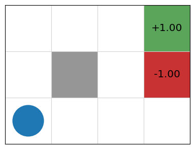
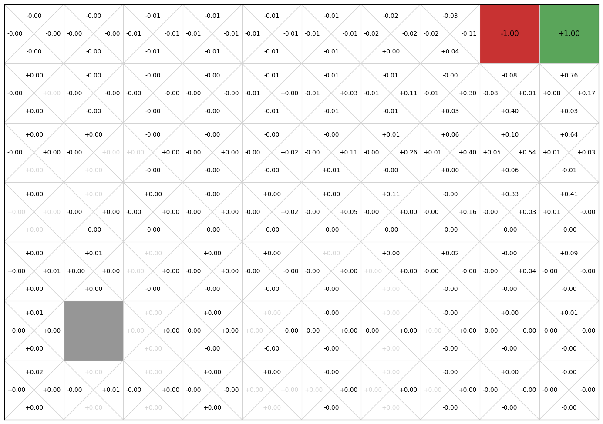
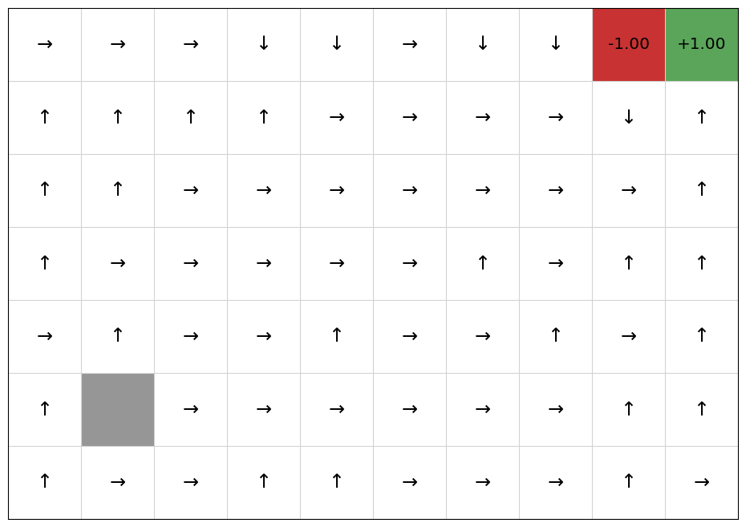
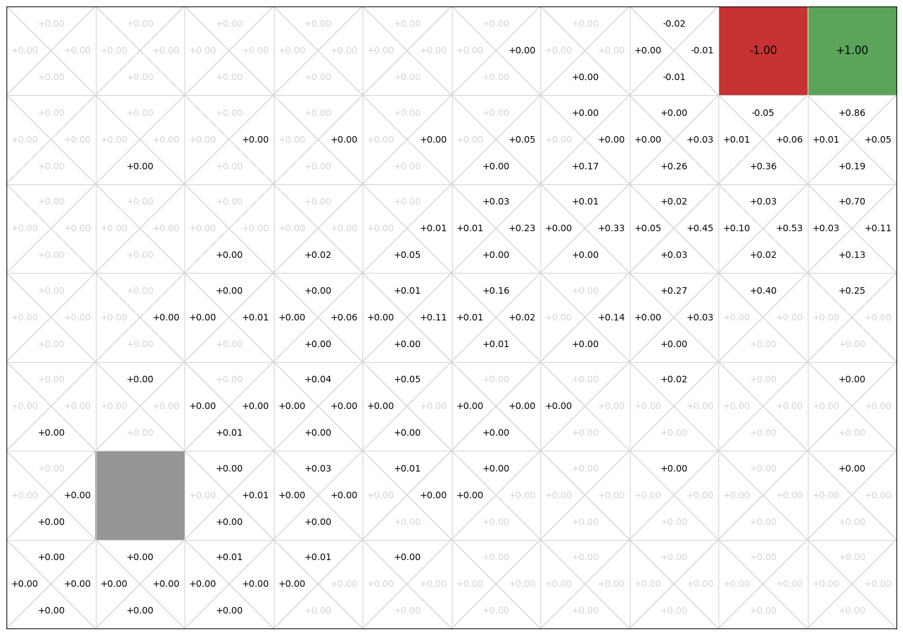
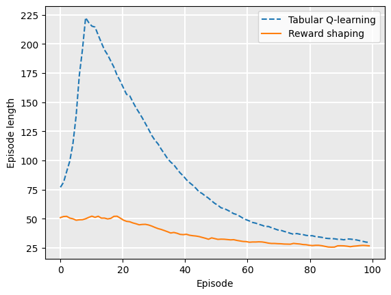
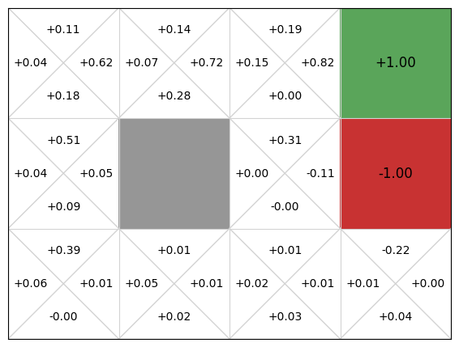
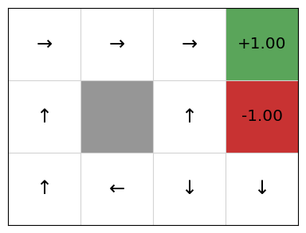
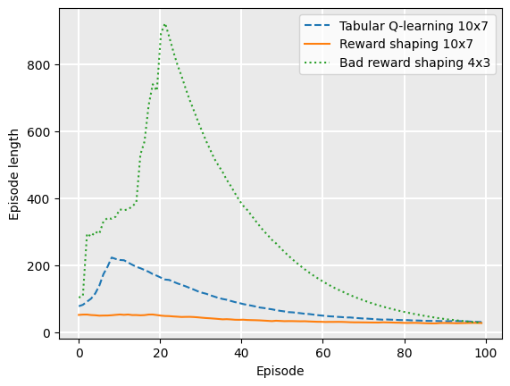

Reward shaping#
Learning outcomes
The learning outcomes of this chapter are:
Explain how reward shaping can be used to help model-free reinforcement learning methods to converge.
Manually apply reward shaping for a given potential function to solve small-scale MDP problems.
Design and implement potential functions to solve medium-scale MDP problems automatically.
Compare and contrast reward shaping with Q-value initialisation.
Overview#
In the previous chapters, we looked at fundamental temporal difference (TD) methods for reinforcement learning. As noted, these methods have some weaknesses, including that rewards are sometimes sparse. This means that there are few state/actions that lead to non-zero rewards. This is problematic because initially, reinforcement learning algorithms behave entirely randomly and will struggle to find good rewards. Remember the example of a UCT algorithm playing Freeway.
In this section, we look at two simple approaches that can improve temporal difference methods:
Reward shaping: If rewards are sparse, we can modify/augment our reward function to reward behaviour that we think moves us closer to the solution.
Q-value Initialisation: We can “guess” good Q-values at the start and initialise \(Q(s,a)\) to be this at the start, which will guide our learning algorithm.
Reward shaping#
Definition – Reward sharping
Reward shaping is the use of small intermediate ‘fake’ rewards given to the learning agent that help it converge more quickly.
In many applications, you will have some idea of what a good solution should look like. For example, in our simple navigation task, it is clear that moving towards the reward of +1 and away from the reward of -1 are likely to be good solutions.
Can we then speed up learning and/or improve our final solution by nudging our reinforcement learner towards this behaviour?
The answer is: Yes! We can modify our reinforcement learning algorithm slightly to give the algorithm some information to help, while also guaranteeing optimality.
This information is known as domain knowledge — that is, stuff about the domain that the human modeller knows about while constructing the model to be solved.
Exercise: Freeway What would be a good heuristic for the Freeway game to learn how to get the chicken across the freeway?

Exercise: GridWorld What would be a good heuristic for GridWorld?

Shaped Reward#
In TD learning methods, we update a Q-function when a reward is received. E.g, for 1-step Q-learning:
The approach to reward shaping is not to modify the reward function or the received reward \(r\), but to just give some additional reward for some actions:
The purpose of the function is to give an additional reward \(F(s,s')\) when any action transitions from state \(s\) to state \(s'\). The function \(F : S \times S \to \mathbb{R}\) provides heuristic domain knowledge to the problem that is typically manually programmed.
We say that \(r + F(s,s')\) is the shaped reward for an action.
Further, we say that \(G^{\Phi} = \sum_{i=0}^{\infty} \gamma^i (r_i + F(s_i,s_{i+1}))\) is the shaped reward for the entire episode.
If we define \(F(s,s') > 0\) for states \(s\) and \(s'\), then this provides a small positive reward for transitioning from \(s\) to \(s'\), thus encouraging actions that transition from \(s\) to \(s'\) in future exploitation. If we define \(F(s,s') < 0\) for states \(s\) and \(s'\), then this provides a small negative reward for transitioning from \(s\) to \(s'\), thus discouraging actions that transition like this in future exploitation.
Potential-based Reward Shaping#
Potential-based reward shaping is a particular type of reward shaping with nice theoretical guarantees. In potential-based reward shaping, \(F\) is of the form:
We call \(\Phi\) the potential function and \(\Phi(s)\) is the potential of state \(s\).
So, instead of defining \(F : S \times S \to \mathbb{R}\), we define \(\Phi : S \to \mathbb{R}\), which is some heuristic measure of the value of each state \(s \in S\).
Theoretical guarantee: this will still converge to the optimal policy under the assumption that all state-action pairs are sampled infinitely often.
This is quite straightforward to show as follows. Consider an episode with shaped reward \(G^{\Phi}\):
\( \begin{array}{lll} G^{\Phi} & = & \sum_{i=0}^{\infty} \gamma^i (r_i + F(s_i,s_{i+1}))\\ & = & \sum_{i=0}^{\infty} \gamma^i (r_i + \gamma\Phi(s_{i+1}) - \Phi(s_i))\\ & = & \sum_{i=0}^{\infty} \gamma^i r_i + \sum_{i=0}^{\infty}\gamma^{i+1}\Phi(s_{i+1}) - \sum_{i=0}^{\infty}\gamma^i\Phi(s_i)\\ & = & G + \sum_{i=0}^{\infty}\gamma^{i}\Phi(s_{i}) - \Phi(s_0) - \sum_{i=0}^{\infty}\gamma^i\Phi(s_i) \\ & = & G - \Phi(s_0) \end{array} \)
where \(G\) refers to the shaped reward for the episode, and \(s_0\) is the starting state of the episode. What this says is that the shaped reward \(G^{\Phi}\) is just the unshaped reward \(G\) minus the potential of the initial state \(s_0\). However, because \(F\) does not depend on the actions and \(G^{\Phi}\) does not depend on shaped rewards beyond the initial state, the shaped Q function, which we refer to as \(Q^{\Phi}\), can be defined as just \(Q^{\Phi}(s,a) = Q(s,a) - \Phi(s)\). Given this, any optimal policy extracted from \(Q^{\Phi}\) will be equivalent to any optimal policy extracted from \(Q\).
However! While it provides guarantees about the end result, potential-based reward shaping may either increase or decrease the time taken to learn. A well-designed potential function decrease the time to convergence.
Example – Potential Reward Shaping for GridWorld#
For Grid World, we use the Manhattan distance to define the potential function, normalised by the size of the grid:
in which \(x(s)\) and \(y(s)\) return the \(x\) and \(y\) coordinates of the agent respectively, \(g\) is the goal state. and \(width\) and \(height\) are the width and height of the grid respectively. Note that the coordinates are indexed from 0, so we subtract 2 from the denominator.
Even on the very first iteration, a greedy policy such as \(\epsilon\)-greedy, will feedback those states closer to the +1 reward. From state (1,2) with \(\gamma=0.9\) if we go Right, we get:
We can compare the Q-values for these states for the four different possible moves that could have been taken from (1,2), using and \(\alpha=0.1\) and \(\gamma=0.9\):
Thus, we can see that our potential reward function rewards actions that go towards the goal and penalises actions that go away from the goal. Recall that state (1,2) is in the top row, so action Up just leaves us in state (1,2) and Down similarly because we cannot go through the walls.
But! It will not always work. Compare states (0,0) and (0,1). Our potential function will reward (0,1) because it is closer to the goal, but we know from from our value iteration example that (0,0) is a higher value state than (0,1). This is because our reward function does not consider the negative reward.
In practice, it is non-trivial to derive a perfect reward function – it is the same problem as deriving the perfect search heuristic. If we could do this, we would not need to even use reinforcement learning – we could just do a greedy search over the reward function.
Implementation#
To implement potential-based reward shaping, we need to first implement a potential function. We implement potential functions as subclasses of PotentialFunction. For the GridWorld example, the potential function is 1 minus the normalised distance from the goal:
from mastering_rl.learners.reward_shaping.potential_function import PotentialFunction
from mastering_rl.markov_decision_processes.gridworld import GridWorld
class GridWorldPotentialFunction(PotentialFunction):
def __init__(self, mdp):
self.mdp = mdp
def get_potential(self, state):
if state != GridWorld.TERMINAL:
goal = (self.mdp.width, self.mdp.height)
x = 0
y = 1
return 0.1 * (
1 - ((goal[x] - state[x] + goal[y] - state[y]) / (goal[x] + goal[y]))
)
else:
return 0.0
Reward shaping for Q-learning is then a simple extension of the QLearning class, overriding the get_delta method:
from mastering_rl.learners.qlearning import QLearning
class RewardShapedQLearning(QLearning):
def __init__(self, mdp, bandit, potential, qfunction):
super().__init__(mdp, bandit, qfunction=qfunction)
self.potential = potential
def get_delta(self, reward, state, action, next_state, next_action, done):
q_value = self.qfunction.get_q_value(state, action)
next_state_value = self.state_value(next_state, next_action)
state_potential = self.potential.get_potential(state)
next_state_potential = self.potential.get_potential(next_state)
potential = self.mdp.discount_factor * next_state_potential - state_potential
delta = (
reward
+ potential
+ self.mdp.discount_factor * next_state_value * (1 - done)
- q_value
)
return delta
We can run this on a GridWorld example with more states, to make the problem harder:
from mastering_rl.qfunctions.qtable import QTable
from mastering_rl.learners.qlearning import QLearning
from mastering_rl.learners.reward_shaping.reward_shaped_qlearning import (RewardShapedQLearning)
from mastering_rl.learners.reward_shaping.gridworld_potential_function import (GridWorldPotentialFunction)
from mastering_rl.policies.q_policy import QPolicy
from mastering_rl.multi_armed_bandit.epsilon_greedy import EpsilonGreedy
mdp = GridWorld(width = 10, height = 7, goals = [((9,6), 1), ((8,6), -1)])
qfunction = QTable()
potential = GridWorldPotentialFunction(mdp)
RewardShapedQLearning(mdp, EpsilonGreedy(), potential, qfunction).execute(episodes=100)
policy = QPolicy(qfunction)
mdp.visualise_q_function(qfunction)
mdp.visualise_policy(policy)
shaped_rewards = mdp.get_rewards()


Now, we compare this with Q-learning without reward shaping:
mdp = GridWorld(width = 10, height = 7, goals = [((9,6), 1), ((8,6), -1)])
qfunction = QTable()
QLearning(mdp, EpsilonGreedy(), qfunction).execute(episodes=100)
policy = QPolicy(qfunction)
mdp.visualise_q_function(qfunction)
mdp.visualise_policy(policy)
q_learning_rewards = mdp.get_rewards()

If we plot the average episode length during training, we see that reward shaping reduces the length of the early episodes because it has knowledge nudging it towards the goal:
from mastering_rl.tests.plot import Plot
Plot.plot_episode_length(
["Tabular Q-learning", "Reward shaping"],
[q_learning_rewards, shaped_rewards],
)

Example – A Bad Potential Function for GridWorld#
This example is thanks to Dr Cathy Wu. Now, let’s consider a poorly-designed potential function — one that gives a shaped reward that is the opposite of the earlier potential function for GridWorld:
from mastering_rl.learners.reward_shaping.gridworld_potential_function import (
GridWorldPotentialFunction,
)
class GridWorldBadPotentialFunction(GridWorldPotentialFunction):
def get_potential(self, state):
return -super().get_potential(state)
We again compare this to standard Q-learning without reward shaping, but using just the original 4x3 GridWorld (doing this on the larger GridWorld never terminated when I ran this):
mdp = GridWorld()
qfunction = QTable()
potential = GridWorldBadPotentialFunction(mdp)
RewardShapedQLearning(mdp, EpsilonGreedy(), potential, qfunction).execute(episodes=100)
policy = QPolicy(qfunction)
mdp.visualise_q_function(qfunction)
mdp.visualise_policy(policy)
bad_shaped_rewards = mdp.get_rewards()


Plotting the episode length, we see that it shapes the reward quite poorly:
Plot.plot_episode_length(
["Tabular Q-learning 10x7", "Reward shaping 10x7", "Bad reward shaping 4x3"],
[q_learning_rewards, shaped_rewards, bad_shaped_rewards],
)

Note that this is so poor that the difference between the standard Q-learning and reward-shaped Q-learning is barely visible on this new graph — and remember that the bad reward shaping example is run on the small 4x3 GridWorld example, not the larger 10x8 version, for which the results would be much worse.
However, notice that because we use a potential function, it still converges to a (close-to) optimal policy! But in this case, the convergence takes longer because the potential function is misleading.
Q-value initialisation#
An approach related to reward shaping is Q-value initialisation. Recall that TD learning methods can start at any arbitrary Q-function. The closer our Q-values is to the optimal Q-values, the quicker it will converge.
Imagine if we happened to initialise our Q-values to the optimal Q-value. It would converge in one step!
Q-value initialisation is similar to reward shaping: we use heuristics to assign higher values to ‘better’ states. If we just define \(\Phi(s) = V_0(s)\), then they are equivalent. In fact, if our potential function is static (the definition does not change during learning), then Q-value initialisation and reward shaping are equivalent[1].
Example – Q-value Initialisation in GridWorld#
Using the idea of Manhattan distance for a potential function, we can define an initial Q-function as follows for state (1,2) using our potential function:
Once we start learning over episodes, we will select those actions with a higher heuristic value, and also we are already closer to the optimal Q-function, so will will converge faster. As with reward shaping though, this entirely depends on having a good potential function! A poor potential function will give an inaccurate initial Q-values, which may take longer to converge.
Takeaways#
Takeaways
A weakness of model-free methods is that they spend a lot of time exploring at the start of the learning. It is not until they find some rewards that the learning begins. This is particularly problematic when rewards are sparse.
Reward shaping takes in some domain knowledge that “nudges” the learning algorithm towards more positive actions.
Q-value initialisation is a “guess” of the initial Q-values to guide early exploration
Reward sharping and Q-value initialisation are equivalent if our potential function is static.
Potential-based reward shaping guarantees that the policy will converge to the same policy without reward shaping.